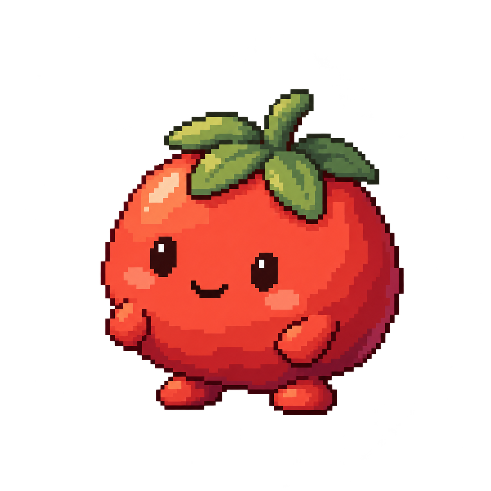

<!doctype html>
<html lang="zh-CN">
<meta charset="utf-8">
<meta name="viewport" content="width=device-width,initial-scale=1">
<title>Tomy · 已否决场景对照</title>
<style>
:root{font-family:-apple-system,BlinkMacSystemFont,"PingFang SC",sans-serif;color:#362b26;background:#f6f3eb;font-synthesis:none}
*{box-sizing:border-box}body{margin:0}button,input{font:inherit}button{cursor:pointer}button:focus-visible,input:focus-visible,.pet:focus-visible{outline:3px solid #b75b45;outline-offset:4px}
main{max-width:1100px;margin:0 auto;padding:44px 32px 32px}
header{display:flex;justify-content:space-between;align-items:start;gap:20px;margin-bottom:30px}.eyebrow{font-size:12px;letter-spacing:.16em;color:#827368;margin-bottom:8px}h1{font-size:30px;font-weight:650;letter-spacing:-.04em;margin:0 0 10px}p{color:#88786a;font-size:14px;line-height:1.7;margin:0}.tag{font-size:12px;padding:7px 12px;border:1px solid #dfd7c7;border-radius:30px;color:#8a7060;white-space:nowrap}
.layout{display:grid;grid-template-columns:minmax(0,1fr) 240px;gap:34px}.desktop{position:relative;height:420px;overflow:hidden;border:1px solid #ddd4c3;border-radius:18px;background:#e8e5dd;touch-action:none;transition:background .25s}
.desktop.dark{background:#232730;border-color:#232730}.desktop .desktop-note{position:absolute;top:22px;left:24px;font-size:12px;color:#9c978d;pointer-events:none}.desktop.dark .desktop-note{color:#8e939d}
.pet{position:absolute;width:96px;height:96px;padding:0;border:0;background:transparent;cursor:grab;touch-action:none;user-select:none;transform-origin:50% 94%;-webkit-tap-highlight-color:transparent}.pet.dragging{cursor:grabbing}
canvas{width:100%;height:100%;display:block;image-rendering:pixelated;pointer-events:none}
.bubble{position:absolute;left:50%;bottom:calc(100% + 8px);white-space:nowrap;transform:translate(-50%,4px);opacity:0;pointer-events:none;background:#fff9ec;color:#4b382c;border:1px solid #d9cbb2;border-radius:11px;padding:8px 12px;font-size:12px;line-height:1.4;box-shadow:0 3px 12px #0000000c;transition:opacity .15s,transform .15s}.bubble span{font-variant-numeric:tabular-nums;margin-left:12px;color:#a36750}.pet:hover .bubble,.pet:focus-visible .bubble{opacity:1;transform:translate(-50%,0)}
.hint{display:flex;justify-content:space-between;gap:20px;margin:14px 2px;color:#9b8b7c;font-size:12px;line-height:1.7}.hint span:last-child{white-space:nowrap}
aside{padding-top:4px}h2{font-size:13px;font-weight:600;margin:0 0 12px;color:#745e50}.section{margin-bottom:28px}.segmented{display:flex;background:#eae5da;padding:3px;border-radius:10px;gap:3px}.segmented button{flex:1;border:0;color:#8b7565;background:transparent;padding:9px 7px;border-radius:7px;font-size:12px;white-space:nowrap}.segmented button.active{background:#fffcf5;color:#58382b;box-shadow:0 1px 4px #5645380c}.size-note{font-size:11px;color:#9d8d7f;margin-top:8px}
.row{display:flex;justify-content:space-between;align-items:center;gap:16px;font-size:13px;color:#786558;margin:12px 0}.row input{accent-color:#bc6650;width:16px;height:16px}.replay{width:100%;border:1px solid #d6cbb9;background:#faf6ec;border-radius:9px;padding:10px;color:#79543e;font-size:13px;margin-top:10px}
.loupe{margin-top:20px;padding-top:25px;border-top:1px solid #e2dacb}.loupe canvas{width:176px;height:176px;margin:0 auto}.loupe p{text-align:center;font-size:11px;margin-top:6px}
.reference{margin-top:28px;padding-top:20px;border-top:1px solid #e2dacb;display:flex;align-items:center;gap:22px}.reference img{width:76px;height:76px;object-fit:contain;image-rendering:pixelated}.reference strong{display:block;font-size:12px;color:#7b6758;margin-bottom:5px}.reference p{font-size:12px}.reference small{color:#9b8b7c;font-size:11px}
.status{min-height:18px;color:#9b8b7c;font-size:12px;line-height:1.6;margin-top:22px}
.modes{display:flex;gap:6px;flex-wrap:wrap;margin-bottom:10px}.modes button{border:1px solid #ddd4c3;background:transparent;border-radius:8px;padding:8px 10px;color:#87715f;font-size:12px}.modes button.active{background:#fff9ed;border-color:#bb7a63;color:#704432}.scene-caption{min-height:36px;font-size:12px}.overview{display:grid;grid-template-columns:repeat(7,1fr);gap:8px;border-top:1px solid #dfd7c7;margin-top:30px;padding-top:20px}.overview button{border:0;border-radius:12px;padding:10px 4px;background:#ebe7de;color:#7d6656}.overview canvas{width:96px;height:auto;aspect-ratio:1;max-width:100%;margin:auto}.overview span{font-size:11px}.overview button.active{background:#fff5dd;box-shadow:inset 0 0 0 1px #c69a78}
@media(max-width:760px){.overview{grid-template-columns:repeat(3,1fr)}main{padding:24px 18px}.layout{grid-template-columns:1fr;gap:24px}header{margin-bottom:24px}h1{font-size:25px}.desktop{height:360px}aside{display:grid;grid-template-columns:1fr 1fr;gap:18px}.section{margin:0}.loupe{grid-column:1/-1;margin:0}.loupe canvas{width:150px;height:150px}.reference{align-items:start}.tag{font-size:10px}.hint{flex-wrap:wrap;gap:4px}}
</style>
<main>
<header><div><div class="eyebrow">TOMY / 专注伙伴</div><h1>一眼看懂，它在做什么。</h1><p>读书时专心，休息时窝进靠枕，完成时收下一颗星星。</p></div><div class="tag">已否决 · 对照</div></header>
<div class="layout">
<section>
  <div class="modes" id="modes" aria-label="桌宠场景"></div>
  <p class="scene-caption" id="sceneCaption"></p>
  <div class="desktop" id="desktop"><div class="desktop-note">桌面预览</div>
    <button class="pet" id="pet" aria-label="Tomy 桌宠。拖动可调整位置，双击可重播动作；方向键可微调位置。"><canvas id="petCanvas" width="288" height="288"></canvas><div class="bubble" aria-hidden="true" id="bubble">Tomy · 专注中<span>25:00</span></div></button>
  </div>
  <div class="hint"><span>拖动换个位置 · 悬停看状态 · 双击重播</span><span id="footprint">角色 80 pt</span></div>
  <div class="reference"><div><strong>沿用你选定的形象</strong><p>圆润番茄、短小四肢、柔和的像素层次。</p><small>当前为独立动作预览，计时显示是示例。</small></div></div>
</section>
<aside>
  <div class="section"><h2>桌面大小</h2><div class="segmented" id="sizes"><button data-size="64">小巧</button><button data-size="80" class="active">标准</button><button data-size="96">稍大</button></div><div class="size-note">64 / 80 / 96 pt · 按角色实际高度</div></div>
  <div class="section"><h2>桌面背景</h2><div class="segmented" id="themes"><button data-theme="light" class="active">浅色</button><button data-theme="dark">深色</button></div></div>
  <div class="section"><h2>动作</h2><label class="row">播放动作<input type="checkbox" id="animate" checked></label><label class="row">减少动态效果<input type="checkbox" id="reduce"></label><button class="replay" id="replay">重播这段动作</button></div>
  <div class="loupe"><h2>放大看细节</h2><canvas id="detailCanvas" width="528" height="528" aria-label="Tomy 动作细节放大"></canvas><p>与桌面角色同步播放</p></div>
</aside>
</div>
<div class="overview" id="overview" aria-label="七种状态对照"></div>
<div id="status" class="status" role="status" aria-live="polite">正在载入动作素材…</div>
</main>
<script type="module" src="scene-player.js"></script>
</html>
